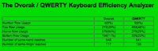
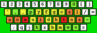

Dvorak History |  Typing Analyzer | Dvorak Day | Links
Typing Analyzer | Dvorak Day | Links
The QWERTY / DVORAK Typing Analyzer
Designed and Programmed by Frunch in 2001, as part of his Oberlin College honors math project on mathematically optimizing keyboards.
This program was built to show you how much more efficient Dvorak is, compared to QWERTY. To get some quick statistics, just type a sentence or two into the text field below (or "cut" and "paste" a large block of text!) and hit "submit." There are two different output options you can choose:
1) Simple Output
Simple Output provides the percentage of keystrokes for the number row, top row, home row and bottom row. It will also tell you how many hand alternations were in your block of text and how many same-finger reaches. You should notice that with Dvorak, you will have more home-row keystrokes and more hand alternations too!
2) Key-By-Key Output
Key-By-Key Output calculates the exact number of keystrokes for each character and displays it in a dynamic keymap, colored according to frequency. Place your cursor over each key to get its exact letter count. With Dvorak, you should notice that your most used keys end up on the home row, and on your "stronger" fingers to boot!
Please note: If you input a large block of text the analyzer might take a few moments to process the data. Please be patient! Also, some accented characters may not work in the analyzer. If you have any trouble, you can try this other QWERTY vs. Dvorak analyzer.